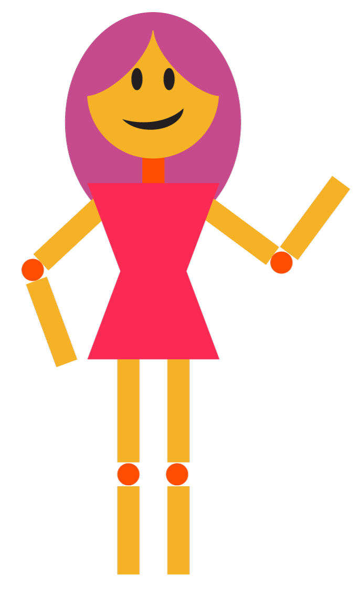

Portfolio



I am a digital and graphic designer with a fondness for abstract imagery and retro influences. My work is a mix of digital precision and artistic freedom, where bright, warm colors and layered shapes come together in expressive compositions.